Wireframes de Relevo
Las 39 pantallas de la app Android que usa el testeo (versión 2.32), en muy baja fidelidad. Se dibujaron a partir de la posición real de cada elemento en el emulador, sin color, fotos ni marca, para mirar solo la estructura y el recorrido.
- Acción principal
- Botón, fila u opción que se toca
- Imagen o ilustración
- Párrafo
Primera vez
Se ven una sola vez: presentan la idea, piden el consentimiento y los permisos, y arman el perfil y la ruta.
-
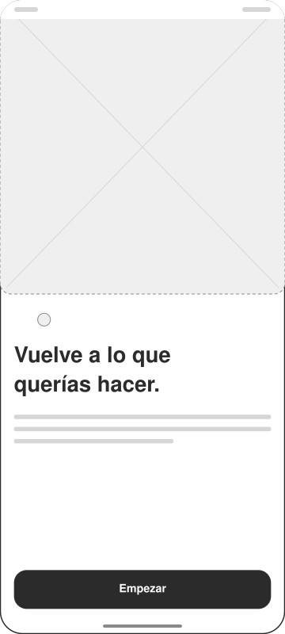
01
Bienvenida
La promesa de Relevo y un solo botón para empezar.
-
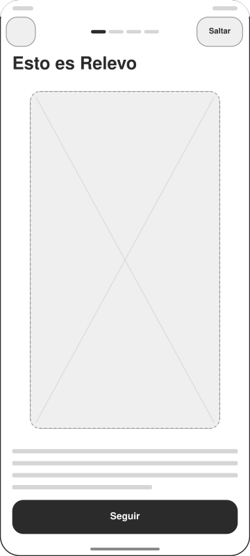
02
Esto es Relevo (video)
Video de 30 segundos que muestra la idea completa.
-
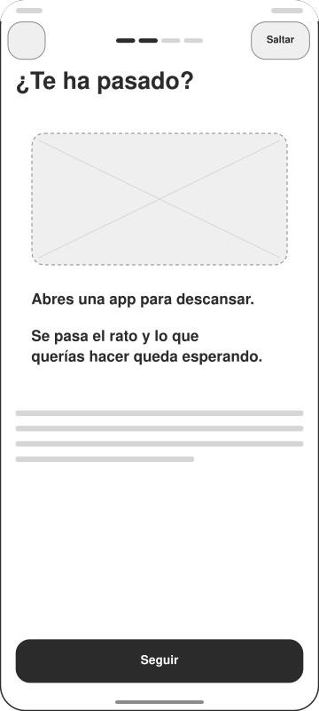
03
¿Te ha pasado?
El problema en palabras de la persona: el rato se pasa y lo que quería hacer queda esperando.
-
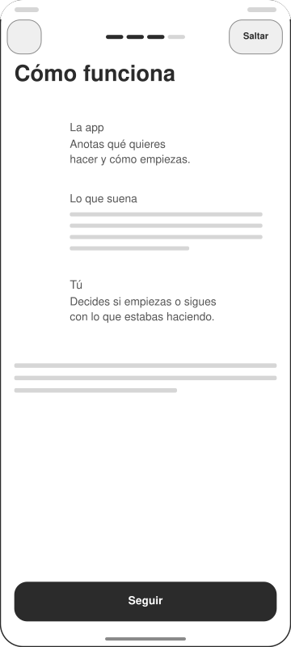
04
Cómo funciona
Las tres partes del sistema: la app, lo que suena y la persona que decide.
-
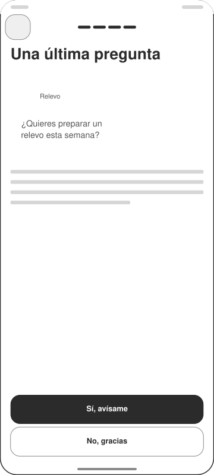
05
Una última pregunta
Pregunta si quiere un aviso después de una semana sin abrir la app. Ninguna opción viene marcada.
-
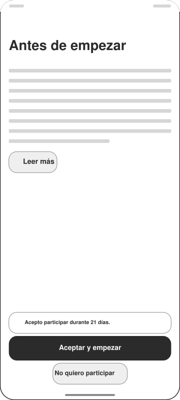
06
Antes de empezar (consentimiento)
Consentimiento para 21 días, con «Leer más». Aceptar exige marcar la casilla; «No quiero participar» pesa lo mismo.
-
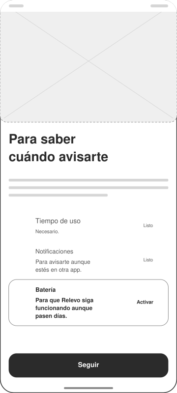
07
Permisos
Tiempo de uso es necesario para contar; notificaciones y batería son opcionales. Cada uno dice para qué sirve.
-
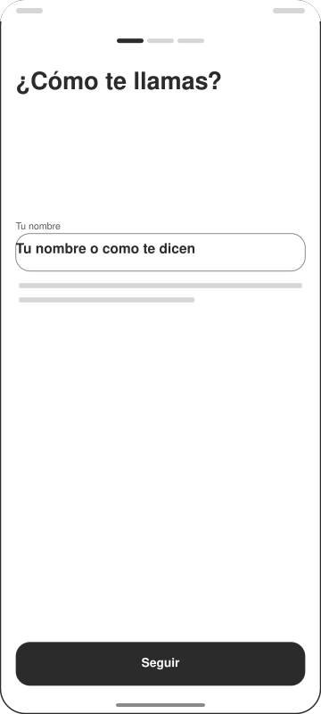
08
¿Cómo te llamas?
El nombre se guarda aparte, solo junto al código.
-
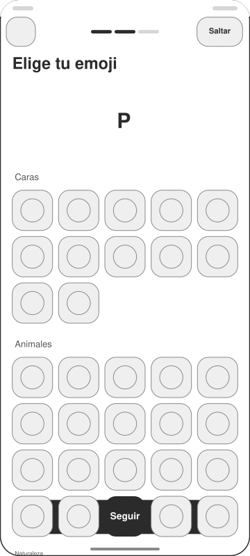
09
Elige tu emoji
La imagen del perfil: emoji en grupos, sin fotos.
-
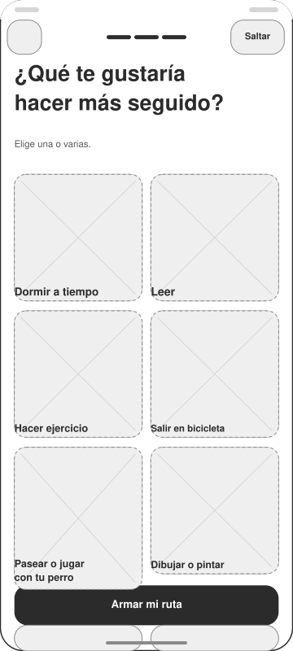
10
Intereses
Lo que le gustaría hacer más seguido. Con esto se arma la ruta de pasos.
-
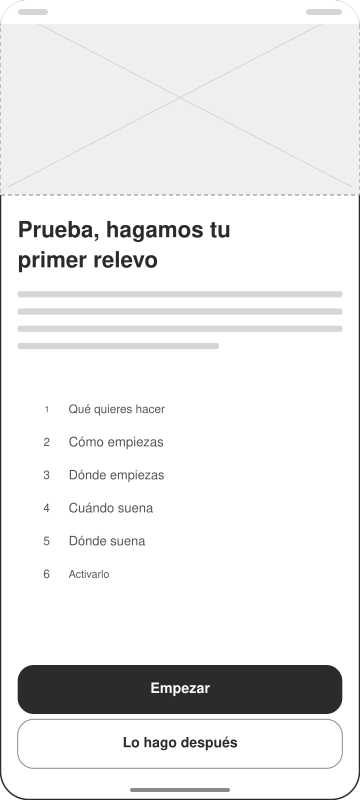
11
Tu primer relevo
El primer relevo se prepara acompañado: seis pasos a la vista.
Preparar un relevo
El corazón de la app: seis pasos para pasar de una intención a una condición que suena en un lugar.
-
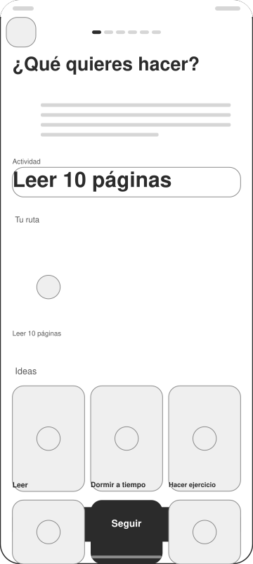
12
Preparar 1/6 · ¿Qué quieres hacer?
La actividad: la que propone la ruta, una idea o una escrita por la persona.
-
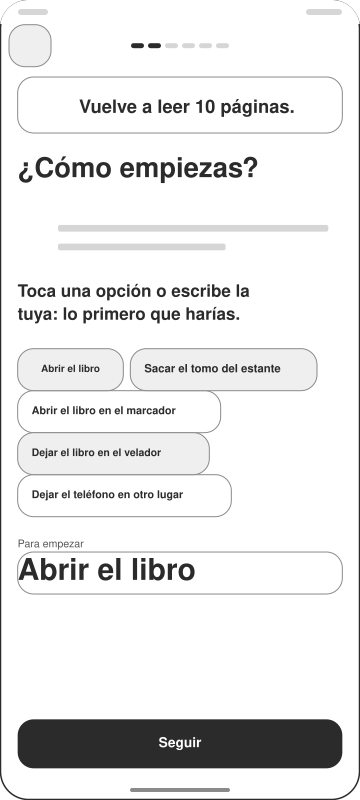
13
Preparar 2/6 · ¿Cómo empiezas?
El primer paso, con opciones de un toque o texto propio.
-
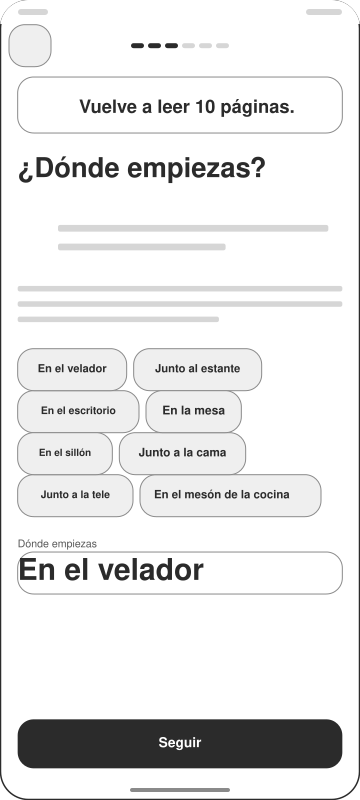
14
Preparar 3/6 · ¿Dónde empiezas?
El lugar donde empieza la actividad: opciones concretas, nunca habitaciones enteras.
-
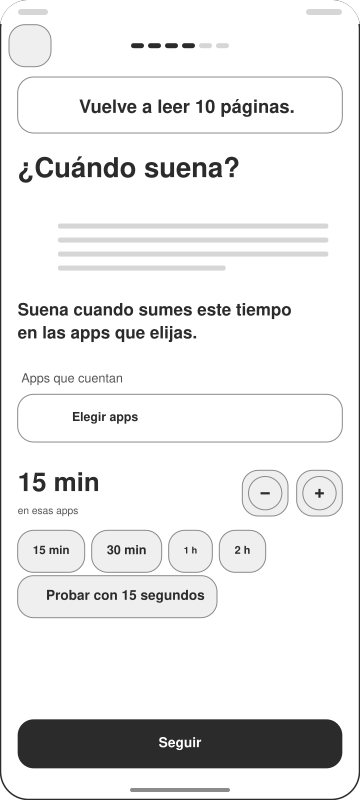
15
Preparar 4/6 · ¿Cuándo suena?
La condición: las apps que cuentan y el tiempo acumulado, de 1 minuto a 6 horas. «Probar con 15 segundos» sirve para ensayar.
-
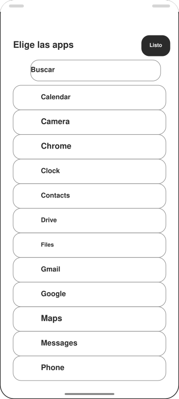
16
Elegir las apps
Las apps instaladas, con búsqueda; se pueden elegir varias.
-
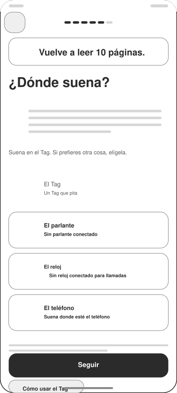
17
Preparar 5/6 · ¿Dónde suena?
Con qué suena: el Tag, un parlante, un reloj o el teléfono, cada uno con su estado. Desde aquí se busca y se prueba el Tag.
-
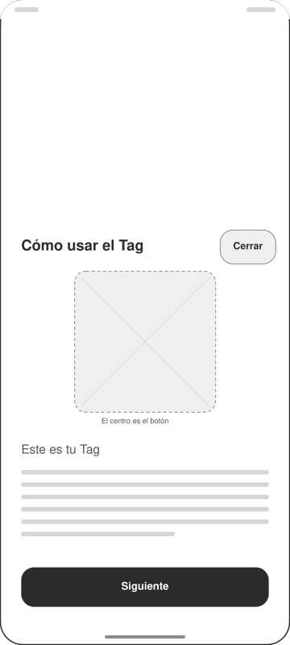
18
Cómo usar el Tag (guía)
Guía del Tag en ocho pasos, que se abre sola la primera vez: dónde está el botón, encenderlo, callarlo y la pila.
-
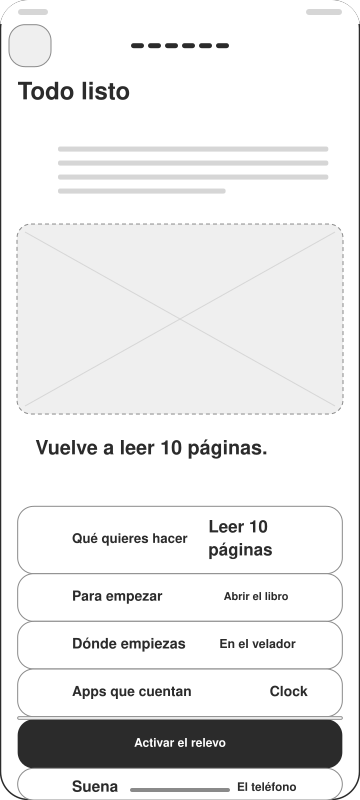
19
Preparar 6/6 · Todo listo
Revisión: cada dato se toca para cambiarlo. «Activar el relevo» empieza a contar.
Contar, sonar y decidir
Lo que pasa después de activar: la app cuenta, la señal suena y la persona cuenta qué decidió.
-
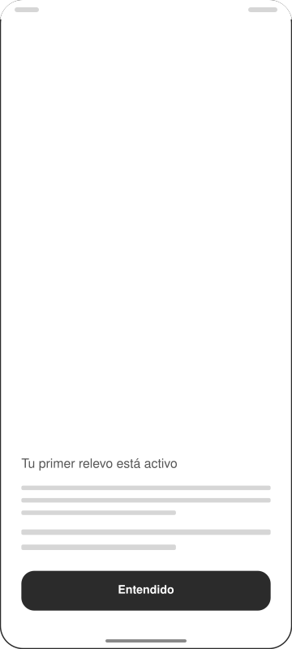
20
Tu primer relevo está activo
Confirmación del primer relevo, con lo que va a pasar.
-
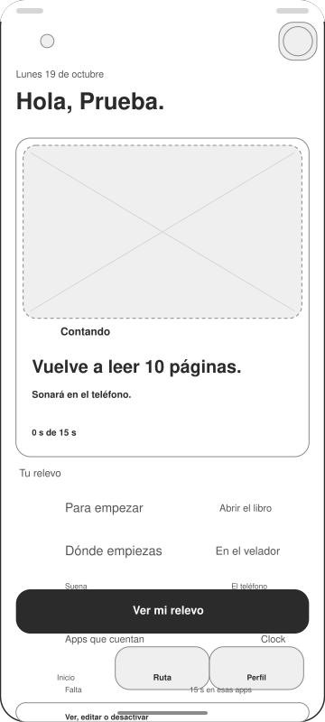
21
Inicio · contando
Inicio mientras cuenta: el avance y el resumen del relevo.
-
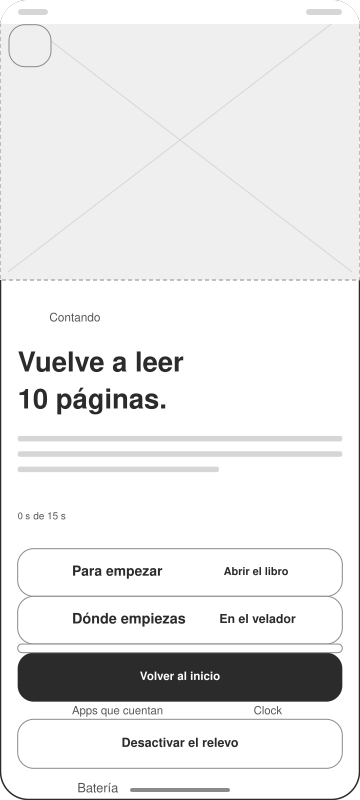
22
Tu relevo (activo)
El relevo en curso: avance, datos editables, volver al inicio o desactivar.
-
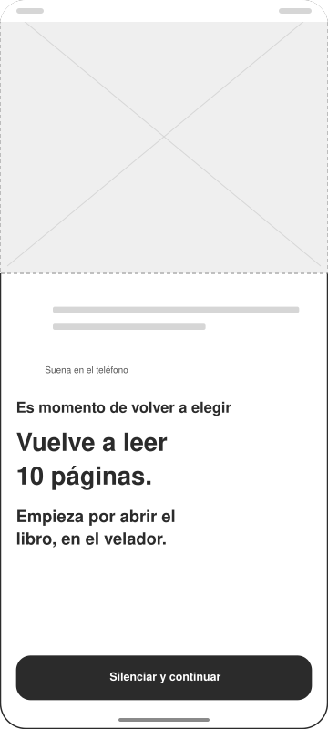
23
Suena
La señal: la actividad y su primer paso. «Silenciar y continuar» la detiene.
-
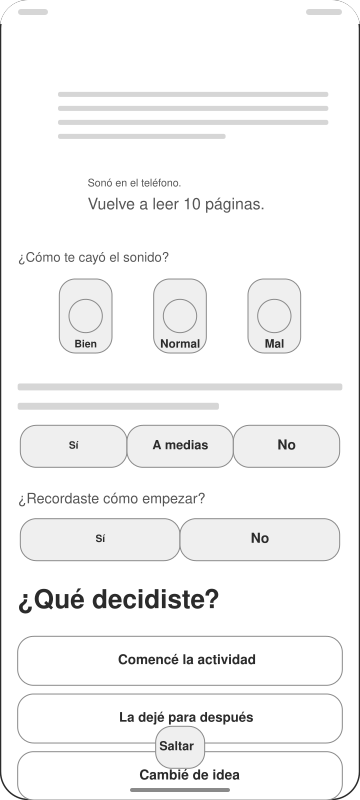
24
¿Qué decidiste?
Preguntas de un toque después de la señal, todas omitibles. «¿Qué decidiste?» tiene tres respuestas del mismo peso.
Inicio, Ruta y Perfil
Las tres pestañas de la app.
-
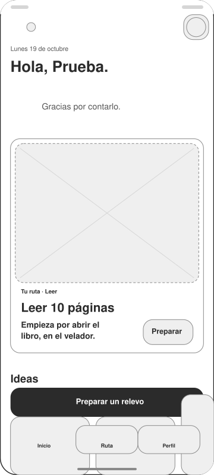
25
Inicio
Inicio sin relevo: el paso actual de la ruta e ideas para preparar otro.
-
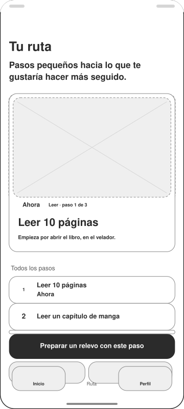
26
Tu ruta
La ruta: el paso actual y todos los pasos, editables.
-
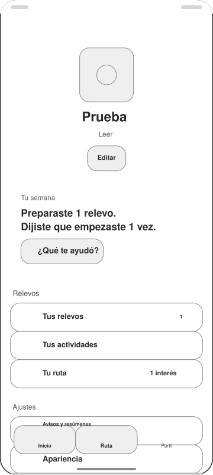
27
Perfil
Perfil: la semana, los relevos, las actividades y la ruta.
-
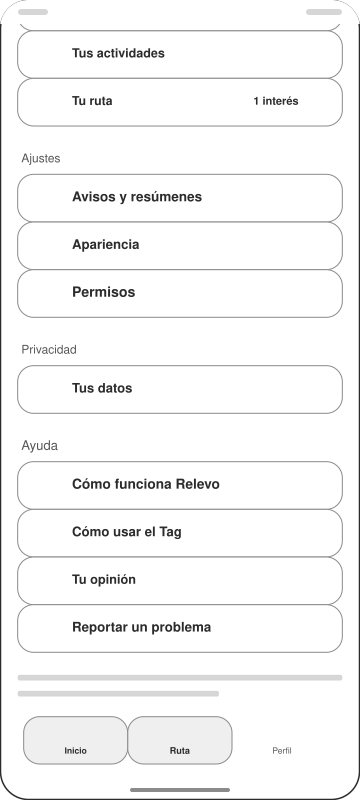
28
Perfil · ajustes y ayuda
Más abajo: ajustes, privacidad, ayuda y la versión de la app.
Perfil
Ajustes, datos, ayuda y la configuración de la prueba.
-
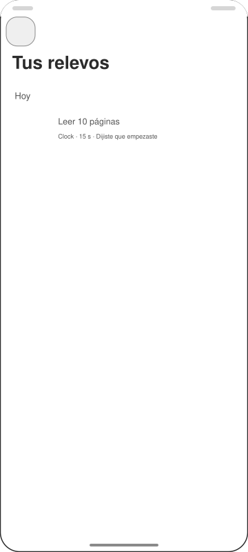
29
Tus relevos (historial)
Historial de relevos, por día.
-
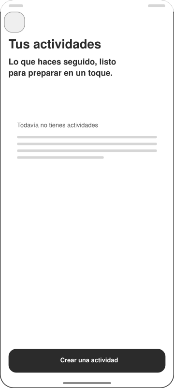
30
Tus actividades
Actividades propias, para preparar en un toque.
-
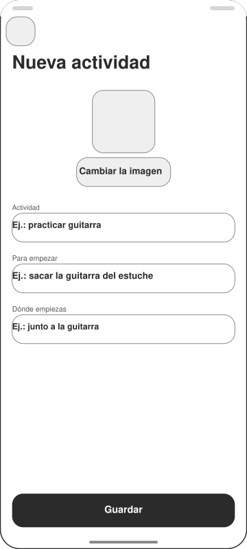
31
Nueva actividad
Crear una actividad: nombre, primer paso y lugar.
-
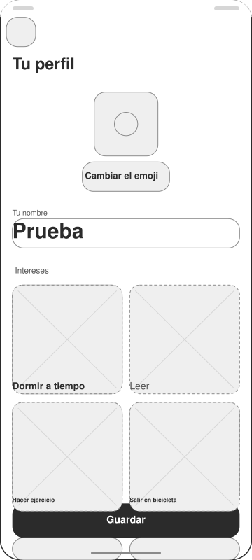
32
Editar el perfil
Editar el perfil: emoji, nombre e intereses.
-
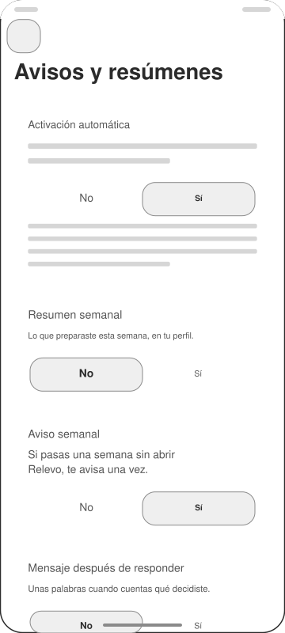
33
Avisos y resúmenes
Activación automática (apagada por defecto, con la explicación de qué mira), resumen semanal, aviso semanal y mensaje después de responder.
-
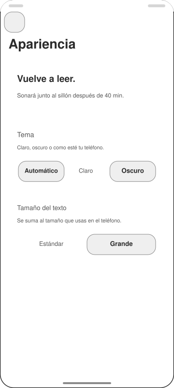
34
Apariencia
Tema claro, oscuro o automático, y tamaño del texto.
-
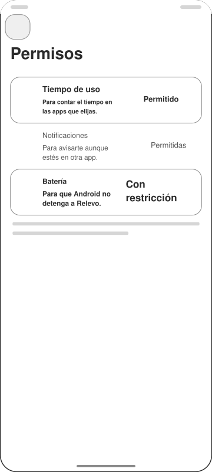
35
Permisos
El estado de cada permiso y para qué sirve.
-
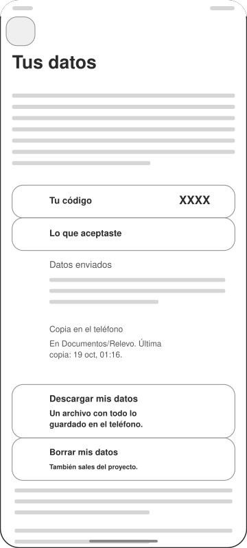
36
Tus datos
Tu código, lo que aceptaste, el estado del envío, la copia en el teléfono, descargar y borrar los datos.
-
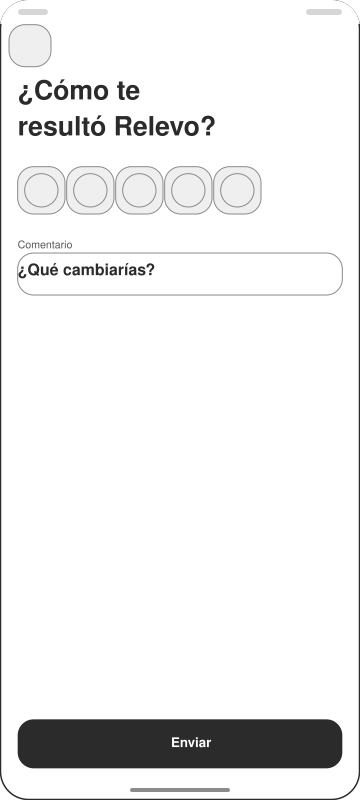
37
Tu opinión
Opinión sobre la app: de 1 a 5 y un comentario.
-
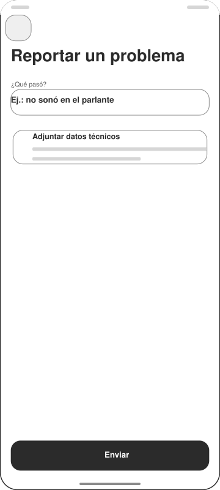
38
Reportar un problema
Reportar un problema, con datos técnicos opcionales.
-
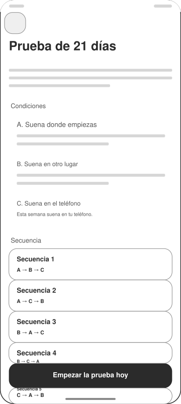
39
Prueba de 21 días (investigador)
Solo para el investigador, en la sesión inicial: condiciones A, B y C y la secuencia asignada. Se abre manteniendo apretada la versión en Perfil.
Cómo se hicieron. Cada pantalla se recorrió en el emulador con un perfil de prueba y sin conexión, y se guardó su árbol de elementos con uiautomator. El script generador/generar-wireframes.js lo convierte en SVG. La 3.2 tiene las mismas pantallas con otra composición visual. Las preguntas semanales y de cierre de la prueba no se dibujaron, porque solo aparecen al pasar los días de la prueba.